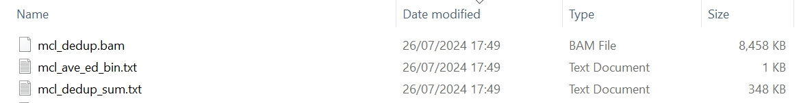

3. Gene with bulk RNA seq
mclumi.gene is a module used for deduplicating UMIs aligned to genes at the bulk RNA-seq levels.
Usage¶
The mclumi.gene module can be used in Python and Shell.
1. Python¶
1.1 Command¶
1 2 3 4 5 6 7 8 9 10 11 12 13 14 15 16 17 18 | |
1 2 3 4 5 6 7 8 9 10 11 12 13 14 15 16 17 18 19 | |
1 2 3 4 5 6 7 8 9 10 11 12 13 14 15 16 17 18 19 | |
1 2 3 4 5 6 7 8 9 10 11 12 13 14 | |
1 2 3 4 5 6 7 8 9 10 11 12 13 14 | |
1 2 3 4 5 6 7 8 9 10 11 12 13 14 | |
1 2 3 4 5 6 7 8 9 10 11 12 13 14 | |
1.2 Attributes in the YAML file¶
Illustration
| Attribute | Description |
|---|---|
ed_thres |
edit distance |
gene_assigned_tag |
to enable deduplication on the gene tag (XT recommended). Any other tag if you know what tags the reads in your provided BAM file. |
gene_is_assigned_tag |
to check if reads are assigned the gene tag (XS recommended) |
bam_fpn |
input file in the BAM format |
heterogeneity |
mode to indicate if studying trajectories of UMI origins and copies/derivatives across a series of PCR amplication cycles. If heterogeneity is set to True, users will gain more statistics and files in the final output directory |
inflat_val |
inflation parameter of the Markov Clustering algorithm |
exp_val |
expansion parameter of the Markov Clustering algorithm |
iter_num |
number of interations for the Markov Clustering algorithm to converge |
mcl_fold_thres |
a fold change threshold for MCL at a range of (1, l) where l is the length of a UMI. This parameter is placed when the mcl_ed or mcl_val function is used. |
verbose |
whether to print intermediate results |
2. Shell¶
2.1 Command¶
The shell command is simplified, but more parameters should be specified in a YAML file, params.yml in order to reduce complexity but optimise future extension.
1 2 3 4 5 6 7 | |
2.2 Attributes in the command¶
Illustration
| Attribute | Description |
|---|---|
-m |
UMI deduplication method |
-ed |
edit distance |
-pfpn |
YAML parameter file. Please see the YAML tab for parameter details |
-bfpn |
input file in the BAM format |
-wd |
working directory |
-vb |
whether to print intermediate results |
2.3 YAML file configuration¶
work_dir: /mnt/d/Document/Programming/Python/mclumi/mclumi/data/
# bam_fpn: /mnt/d/Document/Programming/Python/mclumi/mclumi/data/example_bundle.bam
tag:
# bulk
gene_assigned_tag: XT
gene_is_assigned_tag: XS
umi:
ed_thres: 1
dedup:
# mcl_val
mcl_fold_thres: 1.
inflat_val: 1.1
exp_val: 2
iter_num: 100
# mcl_ed
mcl_fold_thres: 1.6
inflat_val: 1.1
exp_val: 2
iter_num: 100
2.4 Attributes in the YAML file¶
Illustration
| Attribute | Description |
|---|---|
work_dir |
working directory |
ed_thres |
edit distance |
gene_assigned_tag |
to enable deduplication on the gene tag (XT recommended). Any other tag if you know what tags the reads in your provided BAM file. |
gene_is_assigned_tag |
to check if reads are assigned the gene tag (XS recommended) |
inflat_val |
inflation parameter of the Markov Clustering algorithm |
exp_val |
expansion parameter of the Markov Clustering algorithm |
iter_num |
number of interations for the Markov Clustering algorithm to converge |
mcl_fold_thres |
a fold change threshold for MCL at a range of (1, l) where l is the length of a UMI. This parameter is placed when the mcl_ed or mcl_val function is used. |
Output¶
1. Console¶
____ ____ _______
____ ___ _____/ / / / / |/ / _/
/ __ `__ \/ ___/ / / / / /|_/ // /
/ / / / / / /__/ / /_/ / / / // /
/_/ /_/ /_/\___/_/\____/_/ /_/___/
26/07/2024 17:52:36 logger: ===>You are using method MCL to deduplicate UMIs observed at bulk RNA-seq levels
26/07/2024 17:52:36 logger: ===>reading the bam file... /mnt/d/Document/Programming/Python/mclumi/mclumi/data/hgmm_100_STAR_FC_sorted.bam
26/07/2024 17:52:36 logger: ===>reading BAM time: 0.00s
26/07/2024 17:52:36 logger: =========>start converting bam to df...
26/07/2024 17:53:14 logger: =========>time to df: 38.528s
26/07/2024 17:53:15 logger: ======># of raw reads: 3553230
26/07/2024 17:53:16 logger: ======># of reads with qualified chrs: 3553230
26/07/2024 17:53:17 logger: ======># of unique umis: 100
26/07/2024 17:53:17 logger: ======># of redundant umis: 588963
26/07/2024 17:53:17 logger: ======>edit distance thres: 1
26/07/2024 17:53:18 logger: ======># of columns in the bam df: 15
26/07/2024 17:53:18 logger: ======>Columns in the bam df: ['id', 'query_name', 'flag', 'reference_id', 'genome_pos', 'mapping_quality', 'cigar', 'query_sequence', 'next_reference_id', 'next_reference_start', 'query_qualities', 'read', 'XT', 'XS', 'umi']
26/07/2024 17:53:18 logger: ======># of raw reads:
id ... umi
0 0 ... GGTGCGTAGGCTACGA
1 1 ... TGACTAGGTGTGGTTT
2 2 ... CAGATCATCGTCGTTC
3 3 ... TTTGCGCCAAGTCTGT
4 4 ... GCAGCCATCATCATTC
... ... ... ...
3552647 3552647 ... AGAGCTTCACGACGAA
3552648 3552648 ... GTAACTGAGTGAAGTT
3552649 3552649 ... ACACCGGGTACGACCC
3552650 3552650 ... ATCACGAGTAATTGGA
3552651 3552651 ... ACTATCTCAAGGTGTG
[588963 rows x 15 columns]
26/07/2024 17:53:18 logger: ===>start building umi graphs...
26/07/2024 17:53:38 logger: ===>time for building umi graphs: 20.07s
exon-NM_000059.4-10 {0: [0], 1: [1], 2: [2], 3: [3], 4: [4], 5: [5...
exon-NM_000059.4-11 {0: [0], 1: [1], 2: [2], 3: [3], 4: [4], 5: [5...
exon-NM_000059.4-19 {0: [0]}
exon-NM_000059.4-22 {0: [0], 1: [1], 2: [2]}
exon-NM_000059.4-27 {0: [0], 1: [1], 2: [2], 3: [3], 4: [4], 5: [5]}
...
id-YWHAEP5 {0: [0], 1: [1], 2: [2], 3: [3], 4: [4], 5: [5]}
id-YWHAQP2 {0: [0], 1: [1], 2: [2], 3: [3], 4: [4], 5: [5...
id-YWHAQP6 {0: [0], 1: [1], 2: [2], 3: [3], 4: [4], 5: [5...
id-ZBTB12BP {0: [0]}
id-ZNF887P-3 {0: [0], 1: [1]}
Name: mcl, Length: 10961, dtype: object
===>Analysis has been complete and results have been saved!
vignette ... mcl_bam_ids
exon-NM_000059.4-10 {'graph_adj': {0: [], 1: [], 2: [], 3: [], 4: ... ... [2089439, 2089440, 2089441, 2089442, 2089443, ...
exon-NM_000059.4-11 {'graph_adj': {0: [], 1: [], 2: [], 3: [], 4: ... ... [2089459, 2089460, 2089462, 2089464, 2089465, ...
exon-NM_000059.4-19 {'graph_adj': {0: []}, 'int_to_umi_dict': {0: ... ... [2089514]
exon-NM_000059.4-22 {'graph_adj': {0: [], 1: [], 2: []}, 'int_to_u... ... [2089521, 2089522, 2089523]
exon-NM_000059.4-27 {'graph_adj': {0: [], 1: [], 2: [], 3: [], 4: ... ... [2089541, 2089542, 2089543, 2089545, 2089546, ...
... ... ... ...
id-YWHAEP5 {'graph_adj': {0: [], 1: [], 2: [], 3: [], 4: ... ... [470009, 470010, 470011, 470012, 470013, 470014]
id-YWHAQP2 {'graph_adj': {0: [], 1: [], 2: [], 3: [], 4: ... ... [3252877, 3252878, 3252879, 3252880, 3252881, ...
id-YWHAQP6 {'graph_adj': {0: [], 1: [], 2: [], 3: [], 4: ... ... [725797, 725798, 725799, 725801, 725803, 72580...
id-ZBTB12BP {'graph_adj': {0: []}, 'int_to_umi_dict': {0: ... ... [785548]
id-ZNF887P-3 {'graph_adj': {0: [], 1: []}, 'int_to_umi_dict... ... [2856335, 2856336]
[10961 rows x 12 columns]
2. Understanding results¶
After running, the generated files are shown in the following screenshot.

In the output directory, there are three files:
Annotation
{method}_ave_ed_pos_bin.txt- in which UMI count summary results will be stored, indicating observed UMIs assigned to multiple genes.{method}_dedup_sum.txt- deduplicated UMI counts across all reads in the newly generated bam file.{method}_dedup.bam- in which the deduplicated reads will be stored.
Statistics provided in file mcl_ave_ed_pos_bin.txt are tabulated as follow:
| ave_eds | count |
|---|---|
| -1.0 | 4339 |
| 6.0 | 1 |
| 7.0 | 26 |
| ... | ... |
Annotation
the 1st column- average edit distance between UMIs.the 2nd column- number of UMI-tagged reads observed in that edit distance.*-1.0in columnedit distancerepresents that only one unique umi seen for all types of genes; in total there are 4339 reads seen with one unique umi.
Statistics provided in file mcl_dedup_sum.txt are tabulated as follow:
| index | {method}_umi_len | ave_eds | uniq_umi_len | dedup_uniq_diff_pos | dedup_read_diff_pos |
|---|---|---|---|---|---|
| exon-NM_000059.4-10 | 11 | 13.0 | 11 | 0 | 0 |
| exon-NM_000059.4-11 | 9 | 13.0 | 9 | 0 | 0 |
| exon-NM_000059.4-22 | 3 | 13.0 | 3 | 0 | 0 |
| ... | ... | ... | ... | ... | ... |
Annotation
the 1st column- gene types/marker.the 2nd column- deduplicated UMI counts (corresponding to the number of DNA molecules/transcripts) for a given gene type.the 3rd column- average edit distances between UMIs for given gene types.the 4th column- unique UMI counts for given gene types.the 5th column- difference in dedup UMI counts and original unique UMI counts.the 6th column- difference in the number of dedup reads and original reads.